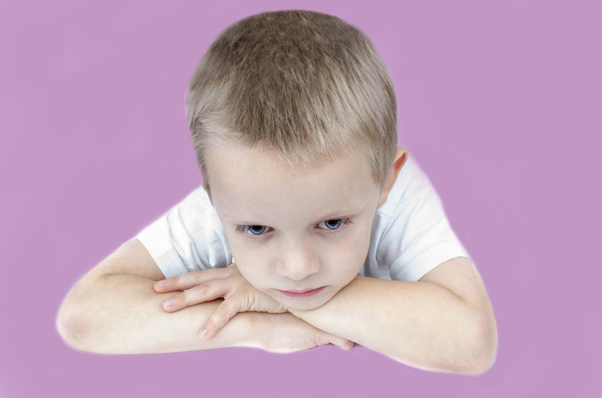

|
|
|
 |
ילדים לרוב לא מבטאים מצוקה או קושי באופן מילולי ולכן המצוקה באה לידי ביטוי דרך התנהגות, תפקוד יומיומי ויחסיהם עם הסביבה הקרובה. אם אתם שוקלים טיפול רגשי לילדכם, רצוי להיוועץ עם איש מקצוע. זאת כדי לבדוק אם הילד זקוק לטיפול רגשי ואם כן, לאיזה סוג של טיפול או שאפשר להסתפק בהדרכת הורים, בלי לטפל בילד ישירות. |
יחד עם זאת, מומלץ לשים לב למקרים הבאים, שיעזרו לכם לקבל החלטה לגבי הטיפול הרגשי:
הטיפול הרגשי בילדים מתבצע לרוב דרך אמצעים השלכתיים כגון מוזיקה, ציור, סיפורים ומשחק. זאת מהסיבה שלילדים קל יותר להיפתח בעודם משחקים. המשחק מחליש קצת את ההגנות ומוסיף הנעה למפגשים. בזמן משחק, הילד עובד על נושאים שונים בהתאם למטרות הטיפול, תוך כדי הנעה. בנוסף, דרך אמצעי השלכתי, כגון מוזיקה, ציור או סיפור, ניתן להחצין את הבעיה ובצורה כזאת הרבה יותר קל להתמודד איתה. הסיפורים מנרמלים ומתקפים את הקושי ומשדרים מסר ש"זה קורה לא רק אצלי" והדבר מוריד את רמת הלחץ והבושה ומאפשר שיח על הבעיה. |
|
|
אני עובדת עם ילדים החל מגיל 3 ועד 18. יש לי ניסיון רב בעבודה עם ילדים
אשר סובלים מקשיים רגשיים שונים כגון:

|
|
|
אני מטפלת במגוון שיטות טיפול ומתאימה את השיטה לילד ולסוג הקושי. כך לדוגמא אני אעבוד על נושא החרדות
בשיטה קוגניטיבית התנהגותית
(לרוב), אך גם זה מותנה בגיל וברמת ההתפתחות של הילד. אם יש קושי ביחסים בין הילד להורה,
הטיפול הדיאדי יכול מאוד לעזור.
ילדים על הספקטרום האוטיסטי מתחברים מאוד למוזיקה ולכן אני אעבוד דרך
טיפול במוזיקה
ועבודה על התקשורת דרך השפה המוזיקלית.
יש עוד מגוון רחב של אפשרויות. לאחר האינטייק וקביעת מטרות הטיפול יחד עם ההורים, אני אוכל להציע את השיטה או השיטות שהכי מתאימות לעבודה במקרה הספציפי של הילד שלך. מטרות הטיפול והתוכנית הטיפולית הינה ייחודית לכל ילד. כמובן שעבודה עם הילד חייבת להיות מלווה בהדרכת הורים. ההדרכות נקבעות לפי הצורך של ההורים ושל המטפל. |
|
|
הטיפול מיועד לילדים ומתבגרים. הטיפולים מתקיימים בקליניקה שלי בקרית השרון, נתניה. הטיפול מתקיים פעם בשבוע בשעה קבועה למשך 45 דקות. עלות הטיפול: 350 שח למפגש. |
|
 הודעה לווטסאפ
raya.bv@gmail.com :ד"ר רעיה בלנקי-וורונוב. לקביעת פגישה חייגו: 054-4934956 או כתבו ל
הודעה לווטסאפ
raya.bv@gmail.com :ד"ר רעיה בלנקי-וורונוב. לקביעת פגישה חייגו: 054-4934956 או כתבו ל